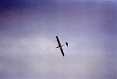
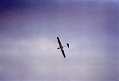

(in chronologischer Reihenfolge, die Bilder können durch anklicken vergrößert werden)
Angefangen hat alles im Winter 1979, als ein RC-Car Sportkollege auf die Idee kam, im beginnenden Winter Modellsegelfliegen zu betreiben, um das Steuergefühl für die Fernsteuerung nicht zu verlieren, beziehungsweise das Steuergefühl zu verfeinern.
Mit einem Nimbus 3 von Carrera, 3
m Spannweite, habe ich meine ersten Flugminuten am Hochstartgummi
verbracht. Später
dann mit einer ASW 17, ebenfalls Carrera 2,2 m Spannweite, mit diesem
Modell
habe ich das Fliegen eigentlich erst erlernt.
Da der Nimbus durch sein Gewicht keine besondere Leistung im
Thermikflug
brachte, habe ich sofort angefangen für die
Tragflächen einen neuen, schlanken
und dadurch wesentlich leichteren Rumpf zu bauen. Der Rumpf bestand aus
einem
Styroporkern, der Balsaholz beplankt wurde. Leider vergaß ich
die GFK
Ummantelung, was dem Rumpf bei der ersten Landung nicht gut bekommen
ist. So etwas
lässt sich aber nachträglich noch ändern.
Ich erkannte mit welch geringem Aufwand Styropor und Balsaholz
verarbeiten
lassen. Nach und nach entstanden Tragflächen zu dem Rumpf in
verschiedenen
Ausprägungen, die alle samt keine Ruder besaßen.
Ich war einfach begeistert davon, ohne Maschinen, brauchbare Teile
für mein
Hobby erstellen zu können.


Mein erster kompletter Eigenbau nun mit Querrudern, WB II Hangflugsegler, 2,2 m Spannweite, Eppler 178, 1997 im Berliner Bastelkeller konstruiert und gebaut, kam mangels Zeit, mein Studium näherte sich dem Ende, und mangels Flugerfahrung erst 1980 auf dem "Grünen Heiner" zum Einsatz.

Eismann Jet ist bei mir nie richtig geflogen, damals hatten die Fernsteuerungen noch keine Möglichkeit Kanäle zu mischen. Also wurde ein elektronischer Vollweg-Mischer nach einer Anleitung aus der Modell Zeitschrift gebaut. Trotz kompakter Bauweise wollte der nicht richtig in den kleinen Rumpf passen. (aus heutiger Sicht ziemlich lächerlich). Außerdem waren die Steuereigenschaften durch mangelnde Einstellmöglichkeit sehr kritisch. Ein mechanischer Mischer brachte auch nicht den Erfolg. Erst Jahre später und mit neuer Fernsteuerung hatte ich das Modell so gut im Griff, dass es mir von einem Modellflugkollegen abgeschwatzt wurde.
Robbe Diamant 3 m Spannweite, mein erster richtiger Baukasten mit vollbeplankten Rippenflächen (ich dachte in meiner Einzimmerwohnung auf dem Küchentisch geht nicht mehr). Die Drehbremsklappen waren eigentlich seiner Zeit voraus.
Einer der Fliegerkollegen, der mir maßgeblich das fliegen beigebracht hat, war kunstflugbegeistert, was auch auf mich abgefärbt hat. Deshalb diese Eigenkonstruktion, begonnen im Sommer 1980.

 

1980-81, WB III Kunstflugsegler mit 3 m Spannweite und als Profil das Eppler 374. Wie auch beim WB II habe ich hier auch wieder die Positivbauweise für den Rumpf mit einem Hohlglassrohr (Angelrute) als Leitwerksträger angewendet.
1982, Muliplex Flamingo, wieder mit vollbeplankten Rippenflächen


1983-84 Competitor, einen Quabeck Konstruktion mit 3,4 m Spannweite (Rumpf über Gewalt Modellbau, Flächen selbst gebaut Styro/Kotofurnier, hier waren erstmals alle Rudermaschinen für Landeklappen und Querruder in der Flächenwurzel untergebracht. Der Profilstrak, etwas ungewöhnlich NACA 4415 auf Worthmann FX-126, aber leistungsfähig. Dieses Modell bin ich fast 20 Jahre lang geflogen. Dann habe ich es an einen Arbeitskollegen, der bisher nur kleinere Modelle flog, erfolgreich übergeben.
1985-86, DG 200 Acroracer aus einem Rumpf von Gewalt Modellbau mit 3 Meter Flächen und zwei 30 cm Ansteckohren, als Profil verwendete ich das HQ 2.5. Mit den Wölbklappen waren dann 3 Servos pro Fläche nötig. Zur Entstörung der Flächenservos benutzte ich Operationsverstärker, was dem Flieger durch einen falsch gepolten Kondensator, Kurzschluss, nach wenigen Flügen zum Verhängnis wurde.
Die Schränke waren voll mit Modellen, animiert durch die Fachpresse beschäftigte ich mich mit dem Elektroflug. Ich bastelte Regler und Ladegeräte. Zu der Zeit waren Elektromotore und Akkus zu schwer und zu wenig leistungsfähig, um damit angetrieben, sinnvollen Segelflug zu betreiben. Deshalb entschloss ich mich zum Bau eines Versuchsträgers in Form eines Motormodells.

1988 Eliptic E, mehr oder weniger abgekupfert aus einer amerikanischen
Zeitung.
Ein Modell mit einem HQ 1.5 für die Tragflächen und
durchgehenden Querrudern,
die auch verwölbt werden konnten. Eigentlich hat dieses Modell
gute "Segelflugeigenschaften".
Den Bauplan habe ich damals in endlos vielen Mittagspausen auf einem
CADDAM
(zur Einarbeitung, Weiterbildung) gezeichnet.
Elektroflug (Motorflug) hat mich eigentlich nicht so begeistert, da man immer fliegen kann, man braucht doch nur den Motor einzuschalten. Außerdem das dauernde Akkupflegen. Deshalb habe ich mich davon wieder abgewendet.
1988-89 ASK 21, 3,8 m Spannweite mit dem Ritz 3 als Profil, 4,3 Kg Masse, wieder den Rumpf von Gewalt, die Flächen selbst gebaut. Das war das erste Modell, was durch Quarzdoppelbelegung beschädigt wurde.
Hausbaupause - Modelle der letzten Jahre sind über das Menü zu erreichen.